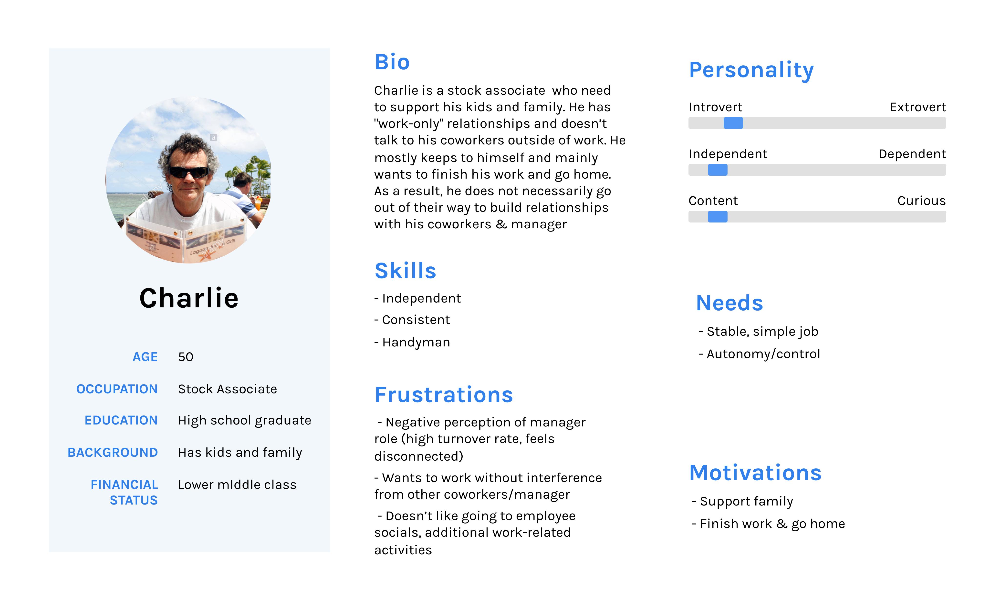
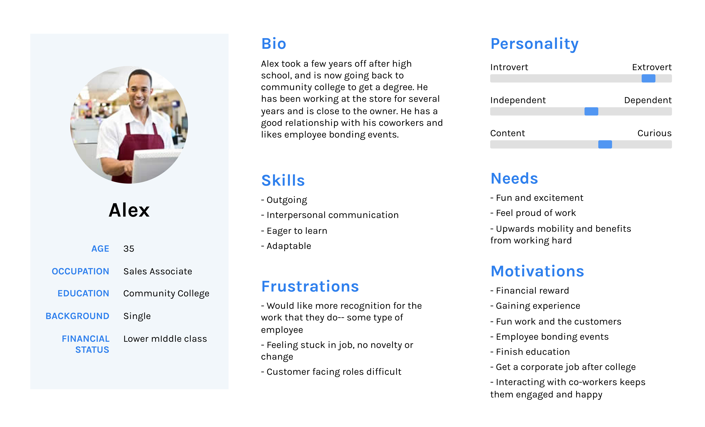

OVERVIEW
Through Berkeley Innovation, my team partnered with Human Catalyst, a mobile optimized platform for promoting employee engagement at the workplace. In particular, we were targeting the hourly customer service workforce to reduce turnover rates by giving employees a reason to remain at their current job. (Scroll all the way down to see an interactive prototype).
THE PROBLEM
High worker turnover is extremely costly to businesses-- they have to deal with onboarding expenses, and sacrifice efficiency and speed while training new employees. Currently, many hourly workers do not feel connected to their workplace, and find it easy to move from one hourly position to another.
We hypothesized that the primary motivation that people change jobs is due to salary, other benefits or monetary incentives, and location. Our job was to find out if outside of these factors, there are any other primary motivations for people to switch jobs. Therefore, the research question we formulated was:
We hypothesized that the primary motivation that people change jobs is due to salary, other benefits or monetary incentives, and location. Our job was to find out if outside of these factors, there are any other primary motivations for people to switch jobs. Therefore, the research question we formulated was:
How might we allow hourly workers to form meaningful connections to their workplace?
RESEARCH
We collected research and background information in several different ways. We were able to gather more background information by doing simple desk research, which we then used to develop a questionaire that would give us deeper insights on the daily experiences of a typical hourly worker. We included questions which delved deeper into an employee's relationships with his/her manager, coworkers, and customers to deduce what factors could influence a job switch.
We first casually interviewed friends and acquaintances who had customer service jobs, and used our interview experiences to adjust our questions. We did employee intercepts at stores, and talked with employees in their work environment to better understand their experiences. Finally, we met with a focus group of hourly workers away from the workplace to encourage more candid responses.
We first casually interviewed friends and acquaintances who had customer service jobs, and used our interview experiences to adjust our questions. We did employee intercepts at stores, and talked with employees in their work environment to better understand their experiences. Finally, we met with a focus group of hourly workers away from the workplace to encourage more candid responses.
PERSONAS
Using our interviews of employees and managers, we put together 3 personas-- 2 of employees, and 1 of a manager. We consolidated common responses and put together a list of common frustrations and motivations.
We created a list of research highlights:
We created a list of research highlights:
1. High turnover rate of managers leads to empoyee distrust, disengagement and poor employee experience
2. Relationships with coworkers mediate satisfaction at work
3. Employees value guidance but not at expense of their autonomy and pride
4. Employees want to feel apart of the workplace leadership decision making process
5. Although money matters, people are willing to work for free in jobs they’re passionate about
2. Relationships with coworkers mediate satisfaction at work
3. Employees value guidance but not at expense of their autonomy and pride
4. Employees want to feel apart of the workplace leadership decision making process
5. Although money matters, people are willing to work for free in jobs they’re passionate about



INITIAL SKETCHES
After we developed an information hierarchy, we made some initial sketches to lay out the information. Some of the key features we chose to include in our preliminary drafts included:
- A distinction between a user's personal posts/progress and workplace communication
- A newsfeed-like bulletin board communication system to decrease the barrier to engaging in conversation and to encourage interactions
- A communication forum specific to an employee's team to encourage team bonding
INFORMATION ARCHITECTURE & MID FIDELITY PROTOTYPE
FINAL PROTOTYPE HIGHLIGHTS
The most important features of the final prototype include:
- a seamless messaging and discussion platform that stimulates conversation between employees and managers
- a way to celebrate professional achievements and engage with the work environment
- a quick and easy mechanism for managers to poll employees and view their feedback at a glance
STYLE GUIDE
FINAL PRESENTATION
INTERACTIVE PROTOTYPE